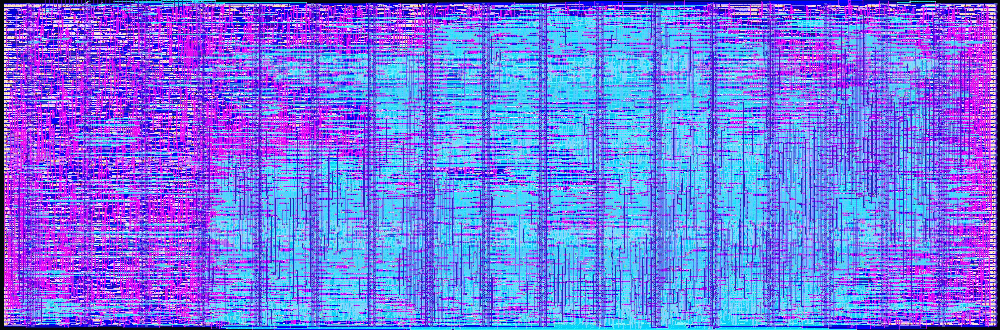
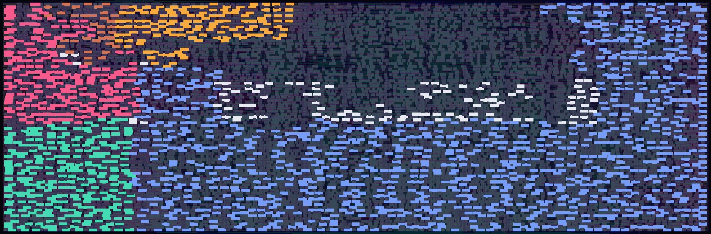
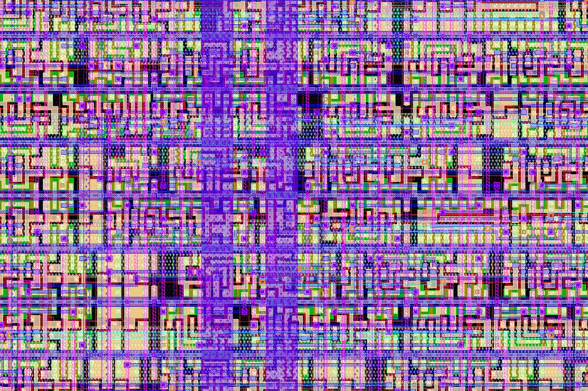
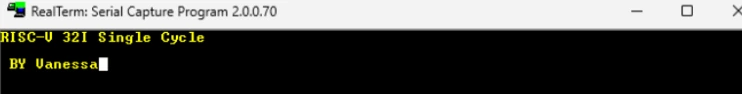

RISC-V RV32I
Un procesador RISC-V de 32 bits que ejecuta una instrucción por ciclo de reloj.

Quiénes lo llevaron
hasta el silicio
Rocha Pérez
Sánchez de la Vega
Su diseño fue enviado a fabricación (tapeout) con Tiny Tapeout, en el proceso de 130 nm SKY130 de SkyWater.
Un procesador que
se carga por partes
Dónde quedó cada parte
del procesador

8 instrucciones bastan
para programas largos

La primera versión guardaba todo el programa dentro del chip y ocupaba 12 tiles. Ahora sólo guarda un bloque de 8 instrucciones y pide los demás a una memoria externa: el diseño bajó a 8 tiles.
Probado antes de
llegar al silicio
- Modelo en Python, ciclo a ciclo. 30 instrucciones de RV32I verificadas una por una, y 0 choques entre el CPU y los cargadores en 136 353 ciclos.
- Simulación RTL con cocotb. Carga el bloque 0 por UART, sirve los demás por SPI y compara la salida.
- Netlist final de compuertas. La misma prueba pasa sobre el circuito ya colocado y ruteado.
- FPGA Basys3. 10 de 10 programas de prueba entregan la salida esperada.

Resultados reportados por la autora en el repositorio; no se reprodujeron para esta publicación.
RISC-V RV32I en datos
| Proceso | SkyWater SKY130 · 130 nm · sky130_fd_sc_hd |
| Programa | Tiny Tapeout · shuttle TTSKY26d |
| Área | 682.6 × 225.8 µm · 4×2 tiles (≈ 0.154 mm²) |
| Reloj | 10 MHz · una instrucción por ciclo, sin pipeline |
| Memoria | 8 instrucciones + 4 datos de 32 bits · bloques de 32 bytes por SPI |
| Puertos | UART 115 200 baud (ui_in[3], uo_out[4]) · SPI en uio[0:3] |
| Celdas | 9 323 lógicas (1 753 flip-flops) + 2 158 de pozo · utilización 76.3 % |
| Timing | Holgura de setup +44.6 ns · de hold +0.02 ns (peor caso en 9 esquinas, periodo de 100 ns) |
| Potencia | 1.40 mW, estimada por análisis estático (esquina típica, 25 °C, 1.8 V) |
| Verificación física | DRC (Magic): 0 errores · LVS: 0 diferencias · prueba a nivel de compuertas en CI |
Validación en silicio pendiente. Para ahorrar área, el diseño cerró con 56 redes con violaciones de antena, y con 6 373 violaciones de slew y 459 de capacitancia en la esquina más lenta (ss, 100 °C, 1.60 V); el timing de setup y hold sí cierra en las 9 esquinas. Su efecto se conocerá al medir el chip.
Ver repositorio Verlo en 3DLas 6 diapositivas
Mismo contenido en formato carrusel. Toca una para abrirla completa.
De dónde salen
estos datos
Toca cada nota para abrirla. Datos consultados el 21 de octubre de 2026.
Versión fabricada
Todo corresponde a lo que se envió al shuttle TTSKY26d: el commit f61df17 del repositorio de la autora. El repositorio tiene cambios posteriores que no están en el chip.
Área, celdas, utilización, longitud de ruteo, timing, potencia, DRC y LVS salen del archivo stats/metrics.csv que generó LibreLane para ese shuttle. Las imágenes se renderizaron con KLayout a partir del .oas del mismo shuttle.
Conjunto de instrucciones
RV32I define 40 instrucciones: 37 de cómputo, memoria y control, más FENCE, ECALL y EBREAK. En el RTL fabricado, el decodificador cubre las 37, además de ECALL, MRET y la escritura de registros CSR. FENCE se ejecuta como una instrucción nula, lo que la especificación permite en un núcleo sencillo, y EBREAK no genera excepción.
Las 30 instrucciones verificadas una por una son las que reporta el repositorio; esta publicación no repitió esas pruebas.
Cómo se hizo el mapa funcional
Cada flip-flop se clasificó por el nombre de la señal en su salida Q dentro de la netlist final: u_rf.regs es el banco de registros, mi_imem.mem la memoria de instrucciones, mi_dmem.mem la de datos, y los módulos mi_boot, mi_block_loader, mi_spi_burst, mi_rx y mi_tx forman el grupo de UART, SPI y cargadores. Lo demás (PC, CSR y modo) va en blanco.
Las posiciones vienen del layout: cada instancia conserva su nombre. La lógica combinacional se dibuja en gris porque después de la síntesis no pertenece de forma única a un bloque. Las zonas resaltadas abarcan del percentil 4 al 96 de las posiciones de cada grupo.
Cifras que conviene leer con cuidado
Celdas: las 11 481 celdas estándar que reporta el flujo incluyen 2 158 celdas de pozo (tap), que no tienen función lógica; de ahí las 9 323 celdas lógicas.
Potencia: 1.40 mW es una estimación del análisis estático con la actividad por defecto del flujo, no una medición.
Timing: el margen de hold es de apenas 0.02 ns en la esquina rápida (ff, −40 °C, 1.95 V). Cierra, pero sin mucha holgura.
Área: el 33 % menos se refiere a tiles reservados (12 → 8), no al área de las celdas.
Figuras ilustrativas
La animación de los modos es un esquema, no una simulación; los bytes que aparecen son la salida esperada del programa de prueba según el repositorio. El acercamiento muestra la región de 8 a 38 µm × 58 a 78 µm del layout, dentro de la zona de la memoria de instrucciones.
Fuentes
- V. Rocha Pérez, RISC-V-rv32i, commit f61df17, GitHub.
- Tiny Tapeout, shuttle TTSKY26d, projects/tt_um_vanessa_riscv (GDS, netlist y métricas).
- RISC-V International, The RISC-V Instruction Set Manual, Volume I: Unprivileged ISA.
- LibreLane (flujo RTL a GDS) y SkyWater SKY130 PDK.